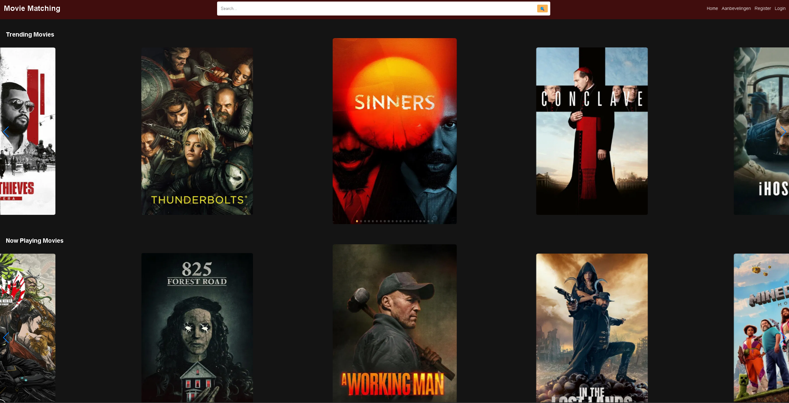

Beschrijving
Movie Matching is een webapplicatie waarmee gebruikers films en series kunnen ontdekken, aanbevelingen kunnen ontvangen op basis van genres, en hun favoriete films kunnen opslaan in hun account. Het project maakt gebruik van de TMDB API om actuele film- en seriegegevens op te halen.
Functionaliteiten
- Trending en Now Playing Films: Bekijk populaire en actuele films.
- Aanbevelingen: Ontvang gepersonaliseerde aanbevelingen op basis van geselecteerde genres.
- Zoekfunctie: Zoek naar films en series met een geïntegreerde zoekbalk.
- Accountbeheer: Gebruikers kunnen zich registreren, inloggen en hun profiel beheren.
- Favorieten Opslaan: Gebruikers kunnen films opslaan en beheren in hun persoonlijke account.
- Profielfoto Uploaden: Gebruikers kunnen een profielfoto uploaden en aanpassen.
Technologieën
- Frontend: HTML, CSS, EJS (Embedded JavaScript Templates)
- Backend: Node.js, Express.js
- Database: MongoDB
- Authenticatie: Bcrypt voor wachtwoordhashing en Express-session voor sessiebeheer
- API: TMDB API voor film- en seriegegevens
- Bestandsbeheer: Multer voor het uploaden van profielfoto's
Belangrijkste Leerpunten
- Werken met externe API's (TMDB) en het verwerken van JSON-gegevens.
- Implementeren van gebruikersauthenticatie en sessiebeheer.
- Gebruik van MongoDB voor het opslaan van gebruikersgegevens en favorieten.
- Dynamische rendering van pagina's met EJS.
- Bestandsbeheer en het veilig opslaan van geüploade bestanden.